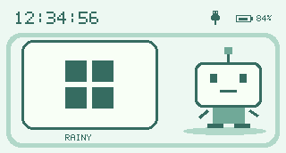
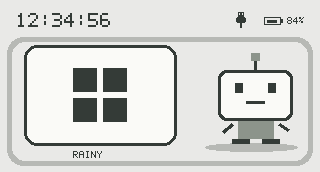
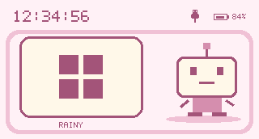
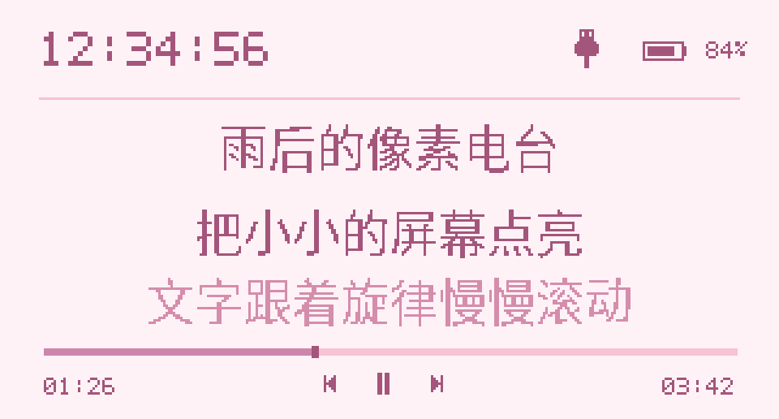
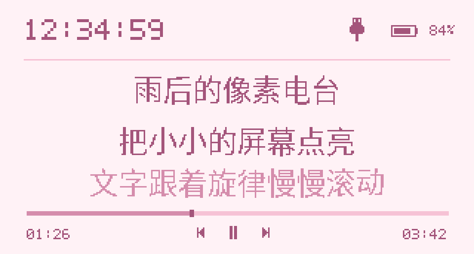
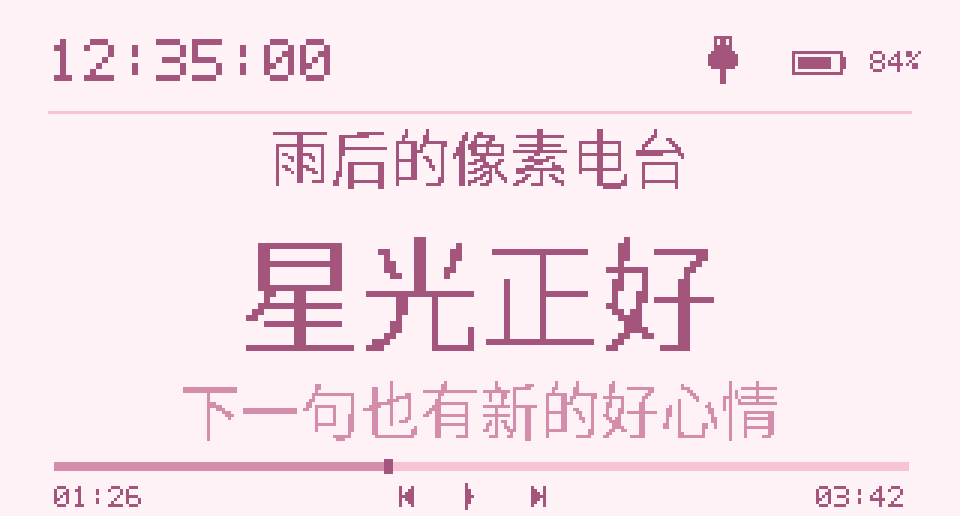
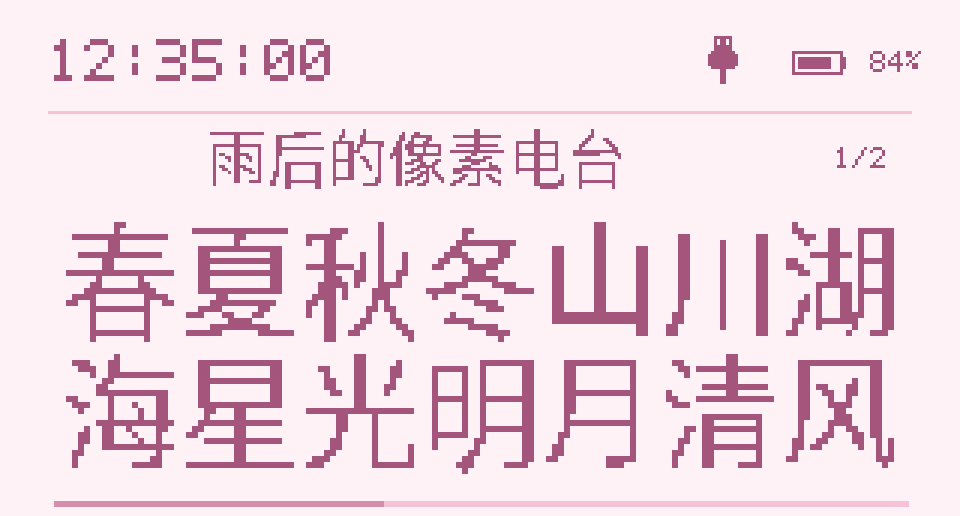
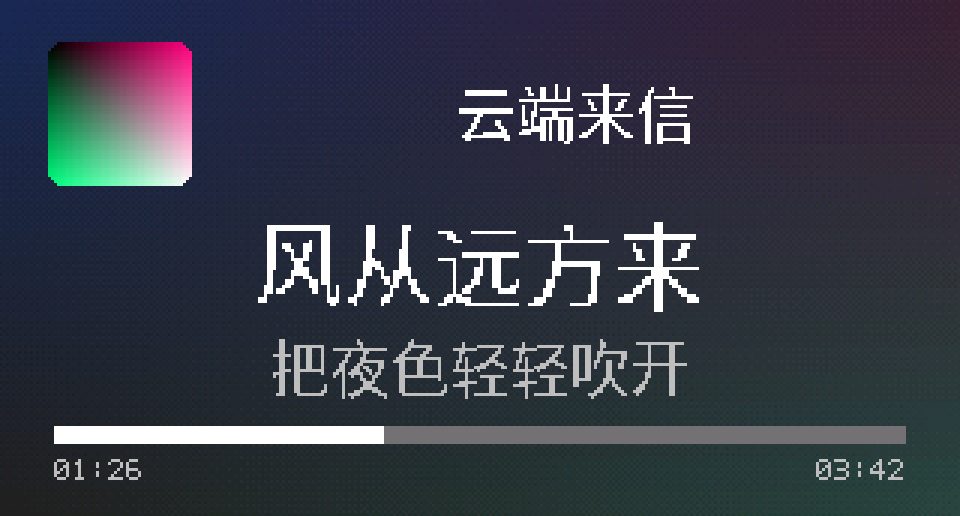
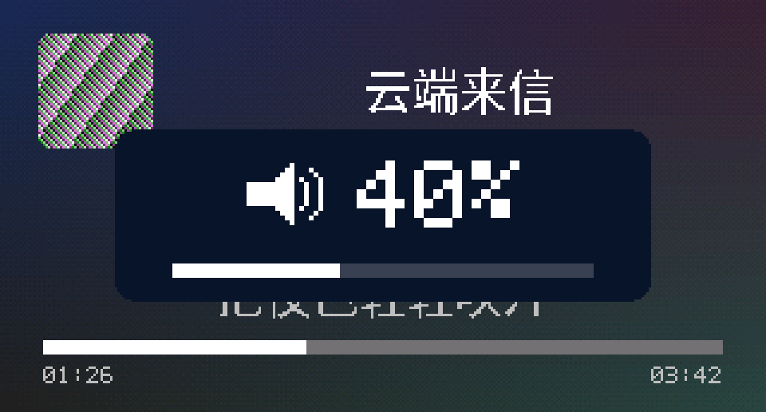

基础功能 / 无需电脑后台
脱离电脑也能用
基础屏幕版
装好以后日常完全不用开电脑软件。显示大按键回显、实时时钟、电量、连接图标，右边住着一只会动的像素桌宠。


- 不用传 2.4MB 中文字库，也不占用电脑后台
- 支持已核对的 Rainy75 V2 屏幕，安装前检查兼容性
- 仅首次使用或彻底断电后接有线校准一次时间
当前已选 · 只装基础屏幕版







装好以后日常完全不用开电脑软件。显示大按键回显、实时时钟、电量、连接图标，右边住着一只会动的像素桌宠。


刷入完整扩展固件：机内保留基础桌宠页与全屏沉浸页，重点使用上方带时钟和电量的 4 种经典歌词模板。
Ctrl+F8 在「桌宠按键页 ↔ 4套经典歌词 ↔ 全屏沉浸」间循环与传统歌词共用同一套固件，默认打开封面取色的沉浸页。调节系统音量时可显示短暂提示。
Ctrl+F8 仍可切回基础页贴心提示：写入固件或对时前，请先关掉 WOB 官方驱动页面，并把“电脑歌词小助手”暂停，避免两边同时抢着连键盘。